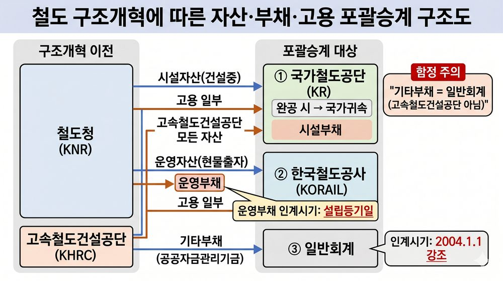
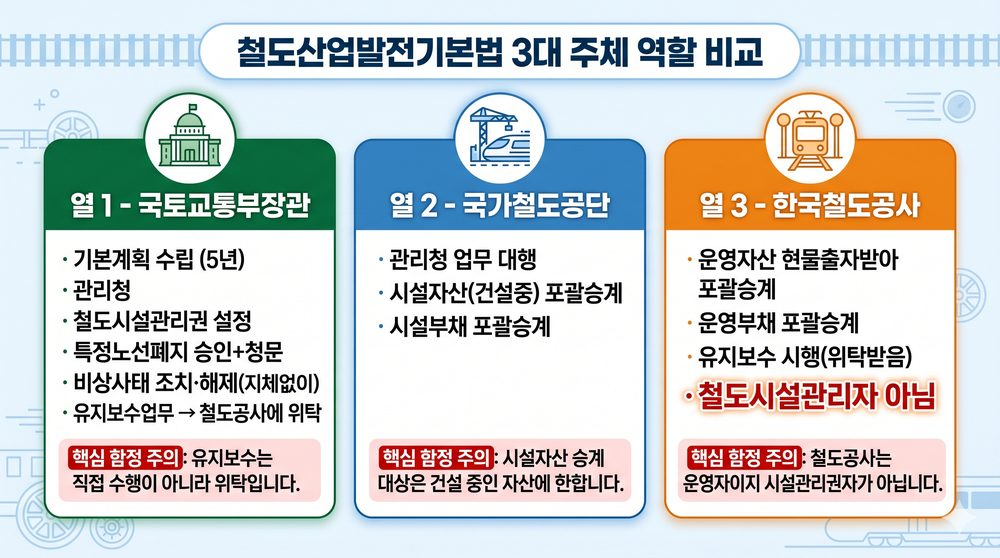
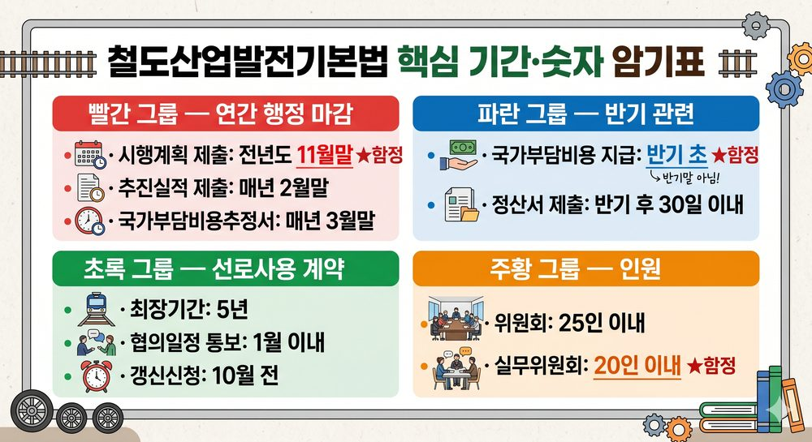
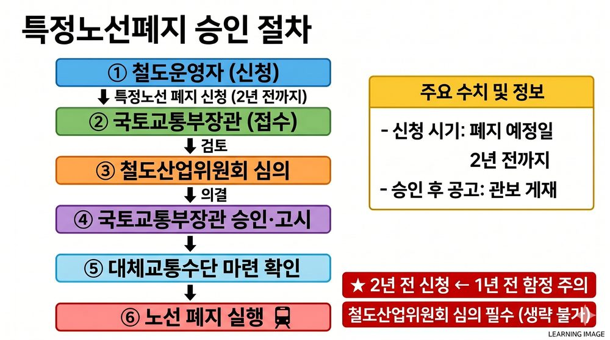

PART 1. 기본 용어 정의▲
개념 01철도의 정의
철도시설 + 철도차량 + 운영·지원체계 = 유기적 운송체계
개념 02철도시설 — 포함·비포함
| 포함 O | 포함 X (자주 출제) |
|---|---|
| 선로·역시설·건축물 / 차량정비기지 / 전철전력·정보통신·신호열차제어 / 연계시설 / 기술개발·교육훈련시설 | 기숙시설 ❌ 철도승무원 통근버스 ❌ |
⚠️ 함정 주의: 기숙시설을 철도시설에 포함시키는 함정
개념 03철도운영 — 정확한 3가지
| 구분 | 내용 |
|---|---|
| ① 여객·화물운송 | 기본 운송 서비스 |
| ② 차량정비·열차운행관리 | 운행 관리 |
| ③ 부대사업개발·서비스 | 부대 서비스 |
⚠️ 함정 주의: '산업'이라는 표현 → 철도운영 아님
⚠️ 함정 주의: '철도직원노조와의 임금협상' → 철도운영 아님
개념 04철도산업 vs 철도운영 구별
| 구분 | 범위 |
|---|---|
| 철도운영 | 여객·화물운송 + 차량정비·열차운행관리 + 부대사업 |
| 철도산업 | 철도운송·시설·차량 관련산업 + 기술개발산업 + 개발·이용·관리 관련산업 |
★ 철도산업이 더 넓은 개념 — 기술개발산업·이용·관리까지 포함
개념 05철도시설관리자 — 해당·비해당
해당되는 자 4가지: ① 관리청 ② 국가철도공단 ③ 철도시설관리권 설정받은 자 ④ 대행·위임·위탁받은 자
⚠️ 함정 주의: 한국철도공사 = 철도운영자, 철도시설관리자 아님 ← 최빈출 함정
개념 06철도시설관리권의 법적 성질
| 항목 | 내용 |
|---|---|
| 법적 성질 | 물권 |
| 준용 규정 | 민법 중 부동산에 관한 규정 |
| 효력 발생 | 철도시설관리권등록부에 등록으로 효력 발생 |
| 처분 제한 | 저당권 설정 시 저당권자 동의 없으면 처분 불가 |
⚠️ 함정 주의: '계약 체결로 효력 발생' ❌ → 등록으로 효력 발생
개념 07공익서비스 정의 + 비용 범위
철도운영자가 영리와 관계없이 국가·지자체 정책이나 공공목적을 위해 제공하는 철도서비스
| 공익서비스비용 범위 O | 범위 X |
|---|---|
| ① 운임·요금 감면액 ② 벽지노선 경영손실 ③ 국가 특수목적사업 수행비용 | 운임·요금 증액 시 증가액 ❌ (감면액만 해당) |
PART 2. 주체-행위 매핑▲
개념 08국토교통부장관 핵심 권한
| 권한 | 내용 |
|---|---|
| 철도산업발전기본계획 수립 | 5년 단위 |
| 관리청 | 철도의 관리청 = 국토교통부장관 |
| 철도시설관리권 설정 | 국토교통부장관이 설정 |
| 특정노선폐지 승인 | + 청문 실시 필수 |
| 비상사태 조치·해제 | 해제 시 지체없이 (위원회 심의 없음) |
| 유지보수 위탁 | 철도시설유지보수 시행 → 한국철도공사에 위탁 |
⚠️ 함정 주의: 비상사태 해제 시 위원회 심의 불필요 — 지체없이 해제
개념 09국가철도공단 역할
| 역할 | 내용 |
|---|---|
| 관리청 업무 대행 | 철도시설 건설사업 집행 |
| 자산 포괄승계 | 시설자산 (건설중인 것) |
| 부채 포괄승계 | 시설부채 |
| 고용 포괄승계 | 철도직원 일부 |
⚠️ 함정 주의: '한국철도시설관리공단' → ❌ 정식명칭은 국가철도공단
개념 10한국철도공사 역할
| 역할 | 내용 |
|---|---|
| 자산 포괄승계 | 운영자산을 현물출자받아 포괄승계 |
| 부채 포괄승계 | 운영부채 |
| 위탁 수행 | 철도시설유지보수 시행 |
| 설립 근거 | 고속철도건설공단 조직 전환 (관리공단 아님) |
⚠️ 함정 주의: 한국철도공사 ≠ 철도시설관리자
개념 11철도산업위원회 구성
| 항목 | 내용 |
|---|---|
| 위원 | 위원장 포함 25인 이내 |
| 위원장 | 국토교통부장관 |
| 의결 | 재적위원 과반수 출석 + 출석위원 과반수 찬성 |
| 실무위원회 | 위원장 포함 20인 이내 |
⚠️ 함정 주의: 실무위원회 = 20인 / 위원회 = 25인 — 숫자 교체 함정
개념 12기타부채 포괄승계
기타부채 = 공공자금관리기금에 대한 부채 → 포괄승계: 일반회계
⚠️ 함정 주의: 기타부채 = 일반회계 (고속철도건설공단 교체 함정)
PART 3. 자산·부채·고용 포괄승계▲
개념 13자산 포괄승계 전체 구조

자산 포괄승계 구조도
| 자산 종류 | 승계 주체 |
|---|---|
| 철도청 시설자산 (건설완료) | 국토교통부장관 이관 |
| 철도청 시설자산 (건설중) | 국가철도공단 포괄승계 |
| 고속철도건설공단 모든 자산 | 국가철도공단 포괄승계 |
| 운영자산 | 한국철도공사 현물출자 |
| 완공 시 | → 국가귀속 |
★ 운영자산 = 한국철도공사 / 시설자산·건설중 = 국가철도공단
개념 14부채 포괄승계 구조

주체별 역할 매핑
| 부채 종류 | 승계 주체 | 인계 시기 |
|---|---|---|
| 운영부채 | 한국철도공사 | 설립등기일 |
| 시설부채 | 국가철도공단 | 2004년 1월 1일 |
| 기타부채 | 일반회계 | 2004년 1월 1일 |
⚠️ 함정 주의: 운영부채 인계 시기 = 설립등기일 (익일 아님)
⚠️ 함정 주의: 고정부채 → 철도부채 분류에 없음 (함정)
개념 15고용 포괄승계
철도직원 고용 포괄승계: 한국철도공사 + 국가철도공단 양쪽 모두
PART 4. 핵심 숫자·기간▲
개념 16전체 숫자 암기표

핵심 기간·숫자 암기표
| 항목 | 숫자/기간 | 함정 |
|---|---|---|
| 기본계획 수립 주기 | 5년 | 1년·10년 |
| 위원회 위원 | 25인 이내 | 20인 교체 |
| 실무위원회 위원 | 20인 이내 | 25인 교체 |
| 경미한 변경 | 1년 이내 | 3년 교체 |
| 시행계획 제출 | 전년도 11월말 | 12월말 교체 |
| 추진실적 제출 | 매년 2월말 | 3월말 교체 |
| 국가부담비용추정서 | 매년 3월말 | 2월말 교체 |
| 국가부담비용 지급 | 매 반기 반기 초 | 반기말 교체 |
| 정산서 제출 | 반기 후 30일 이내 | 15·60일 교체 |
| 선로계약 최장기간 | 5년 | 3년 교체 |
| 협의일정 통보 | 1월 이내 | 3월 교체 |
| 갱신신청 기한 | 만료 10월 전 | 6월 전 교체 |
| 특정노선 폐지 공고 | 승인 후 1월 이내 | 3월 교체 |
| 과태료 의견진술 | 10일 이상 | 30일 교체 |
| 최고 벌칙 | 3년 이하 징역 / 5천만원 | 1억원 교체 |
PART 5. 주요 절차 흐름▲
개념 17구조개혁기본계획 수립 절차
수립 → 관련 행정기관 장과 사전협의 → 철도산업위원회 심의 → 관보에 고시
개념 18공익서비스 보상계약 절차
보상계약 체결 전 → 국토교통부장관 + 기획재정부장관과 사전협의 → 원인제공자가 체결
⚠️ 함정 주의: 보상계약 = 원인제공자가 체결 (국토교통부장관이 체결하는 것 아님)
개념 19특정노선폐지 절차

특정노선폐지 절차 흐름도
신청 사유 4가지:
- 수지균형이 극히 곤란
- 보상계약에도 불구하고 적정보상 미이루어진 경우
- 원인제공자가 공익서비스비용을 부담하지 않은 경우
- 원인제공자가 조정에 따르지 아니한 경우
| 첨부서류 | 기간 |
|---|---|
| 1일 평균 수요 | 과거 6월 이상 |
| 회계보고서 | 과거 1년 이상 |
| 수요 전망 | 향후 5년 |
| 공익서비스비용 규모 | 과거 5년 |
청문 실시 (필수) → 국토교통부장관 승인 → 공고: 승인 후 1월 이내
개념 20국가부담비용 처리 흐름
매년 3월말 — 국가부담비용추정서 제출 → 반기 초 지급 (반기마다) → 반기 후 30일 이내 정산서 제출
PART 6. 적용범위·시책 구분▲
개념 21철도시설 시책 vs 철도운영 시책
| 시책 | 포함 내용 |
|---|---|
| 철도시설 시책 | 투자계획·재원 / 건설·관리 / 유지보수 / 안전관리·재해대책 |
| 철도운영 시책 | 경쟁력강화 / 서비스개선 / 안전진단·사고조사 / 이용자보호 |
⚠️ 함정 주의: 안전진단·사고조사 = 철도운영 시책 (시설 시책 아님)
⚠️ 함정 주의: 소유·경영구조 개혁 = 구조개혁기본계획 내용 (운영 시책 아님)
개념 22위원회 심의사항 vs 기본계획 포함사항
위원회 심의사항 (법 제6조): 육성발전 / 구조개혁 / 시설건설관리 / 안전운영 / 상호협력 / 법률심의
⚠️ 함정 주의: '각종 철도간 연계수송 및 사업조정' → 기본계획 포함사항 (위원회 심의사항 아님)
⚠️ 함정 주의: '철도산업정보화의 여건 및 전망' → 정보화기본계획 포함사항 (위원회 심의사항 아님)
PART 7. 벌칙·과태료▲
개념 23벌칙 구조
| 위반 행위 | 벌칙 |
|---|---|
| 승인없이 특정 노선·역 폐지 | 3년 이하 징역 또는 5천만원 이하 벌금 (최고) |
| 비상사태 조치 위반 (대부분) | 2년 이하 징역 또는 3천만원 이하 벌금 |
| 철도이용 제한·금지 조치위반 | 1천만원 이하 과태료 (벌금 아님!) |
⚠️ 함정 주의: 이용 제한·금지 위반 = 과태료 ← 다른 비상사태 위반(징역·벌금)과 구별
PART 8. 철도시설관리대장·선로사용계약▲
개념 24철도시설관리대장 3가지 주의
| 항목 | 내용 |
|---|---|
| 작성·비치 | 의무 (임의 아님) |
| 작성 단위 | 철도노선별 (철도시설별 아님) |
| 기재사항 결정 | 국토교통부령 (대통령령 아님) |
⚠️ 함정 주의: '철도시설별 작성' ❌ → 철도노선별
개념 25선로사용계약 핵심
신청서 제출 → 1월 이내 협의일정 통보 → 계약 체결 (최장 5년) → 갱신신청: 만료 10월 전
| 선로 구분 | 사용료 산정 |
|---|---|
| 국가·지자체 전액부담 선로 | 유지보수비용 총액만 |
| 그 외 | 유지보수비용 총액 + 총건설사업비 합계액 |